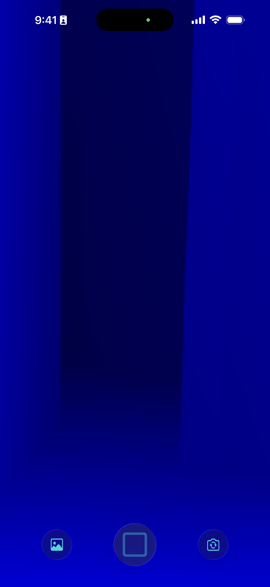

See It In Action
Screenshots
Experience DeepSi's unique depth vision



📡 DeepSi
Ever wondered what it would be like if you saw depth instead of lights? Use your phone's LiDAR sensor as a camera to capture unique depth visualizations, navigate in the dark without illumination, or create stunning depth-based photos and videos.
Why Choose DeepSi
Transform how you see the world with LiDAR depth sensing
Use your phone's depth sensors as a camera. Capture the world in a completely unique way that reveals depth information invisible to traditional cameras.
Navigate in complete darkness without illuminating the scene. LiDAR works without light, letting you see depth even when it's pitch black.
Swipe between various stunning color themes to visualize depth data in different ways. From thermal-inspired gradients to artistic palettes.
Snap unique depth-based photos that capture the world in ways impossible with traditional photography. Perfect for creative projects.
Tap and hold to record depth videos with sound. Create mesmerizing clips that showcase depth perception in motion.
All captured media is automatically saved to a dedicated album in your Photos app. Easy access and full integration with your library.
DeepSi transforms your phone's LiDAR sensor into a unique camera that sees depth instead of light. Experience the world in a completely new way that traditional cameras can't capture.
Perfect for creative projects, scientific exploration, or just experiencing your surroundings from a fascinating new perspective. What will you discover when you see depth instead of light?
Unlike traditional cameras that need light, LiDAR depth sensors work in complete darkness. Use DeepSi as night vision to navigate without illuminating your surroundings.
Whether you're exploring at night, moving through a dark room, or just curious about how depth sensing works, DeepSi lets you see when traditional vision fails.
Create stunning photos and videos that showcase depth in unique ways. Swipe between beautiful color themes to find the perfect visualization for each moment.
All your depth-based media is saved to a dedicated album in Photos, making it easy to share your unique perspective with others or use in creative projects.
See It In Action
Experience DeepSi's unique depth vision
Got Questions?
DeepSi requires a device with a LiDAR sensor. This includes iPhone 12 Pro and later Pro models, iPad Pro (2020 and later), and other compatible Apple devices with depth-sensing hardware.
LiDAR uses infrared light pulses to measure depth, not visible light. This means it works perfectly in complete darkness without needing to illuminate the scene. You can navigate and capture depth data even when it's pitch black.
DeepSi includes multiple built-in color themes that you can swipe through in real-time. Each theme visualizes depth data differently, from thermal-inspired gradients to artistic color palettes.
All media captured with DeepSi is automatically saved to a dedicated album in your Photos app. This makes it easy to access, organize, and share your unique depth-based content.
Yes! Tap and hold to record depth videos with audio. This lets you create immersive clips that combine the unique depth visualization with sound for a complete sensory experience.
DeepSi is perfect for creative photography projects, scientific visualization, navigating in the dark, understanding how LiDAR works, or simply experiencing your environment from a fascinating new perspective. Artists, educators, and curious minds all find unique ways to use depth sensing.